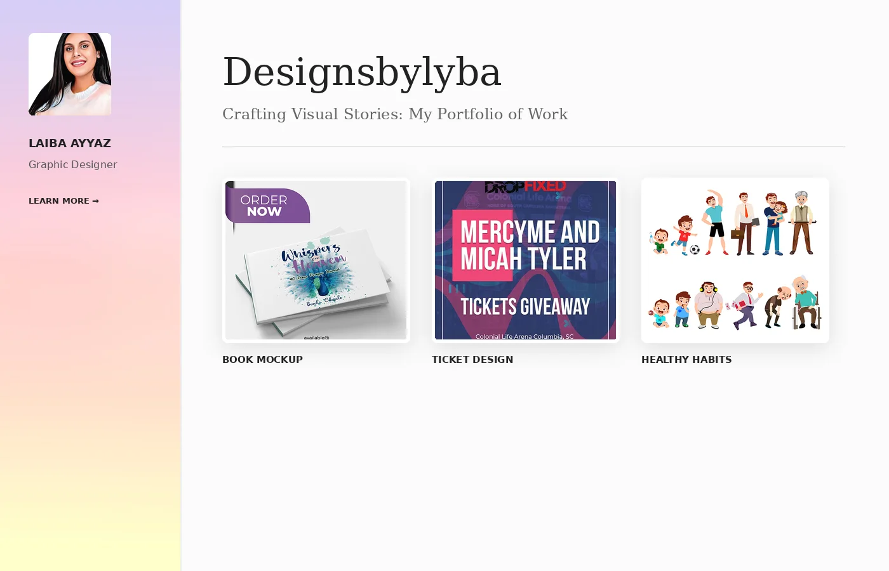
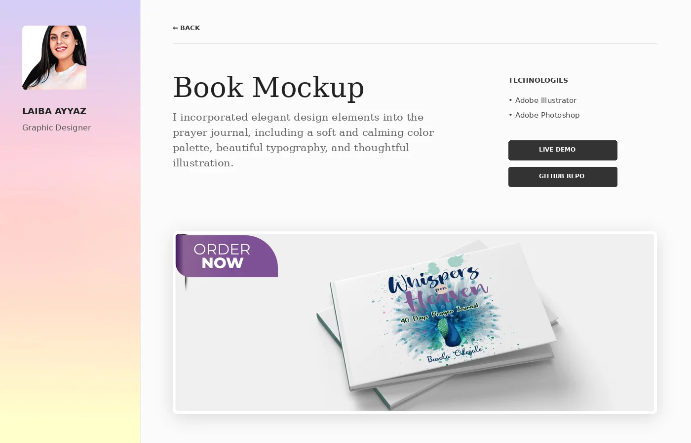
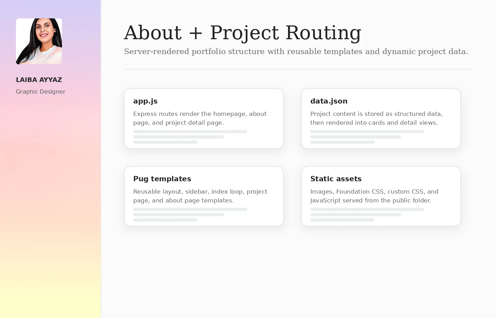

A server-rendered portfolio site built to organize design work into a professional web experience. The project uses Node.js, Express, Pug templates, Foundation CSS and custom styling to display project cards, detail pages and an about page from structured content.

Project data, reusable templates, static assets and routes work together to create a clean portfolio experience.
The website needed to present visual design projects in a simple, accessible format. I structured the experience around a persistent profile sidebar, a project grid, individual project pages and an about page with skills and contact links.
The project combines Express routes, Pug templates, JSON-driven project data and static assets. This made the site easier to maintain because project cards and detail pages could be generated from the same content source.
Routes render the homepage, about page and individual project detail pages using a clean server setup.
Reusable templates support a shared layout, profile sidebar, project grid and dynamic project detail views.
Project names, descriptions, technologies and image paths are stored in structured data and rendered into the interface.
The system is organized so content and templates stay separate, making the front-end easier to update as new projects are added.
The selected previews show the homepage, project detail layout and the underlying content structure used to organize the website.
The homepage introduces the portfolio and displays projects from the JSON file as a responsive grid of clickable project cards.

Each project page pulls the selected project title, description, technologies and supporting images into a consistent detail-page layout.
The build separates app logic, content data, Pug views and static assets, which creates a cleaner front-end foundation for future portfolio expansion.

The project uses a small but clear structure that separates server logic, project data, templates, styles and images.
The build demonstrates how a portfolio can be developed as a maintainable web system rather than a set of disconnected static pages.
The project page route finds the selected project from structured data and renders it through the project template.
app.get('/project', (req, res) => {
const projectId = req.query.id;
const project = projects.find(p => p.id === projectId);
res.render('project', { project });
});The project combines JavaScript server setup with a templated front-end and responsive styling.
This portfolio build shows the ability to organize front-end work as a structured web experience: routing pages, rendering reusable templates, managing content data and presenting projects through a polished responsive layout.
Continue through the Front-End portfolio or view the ScrapAway web application case study.